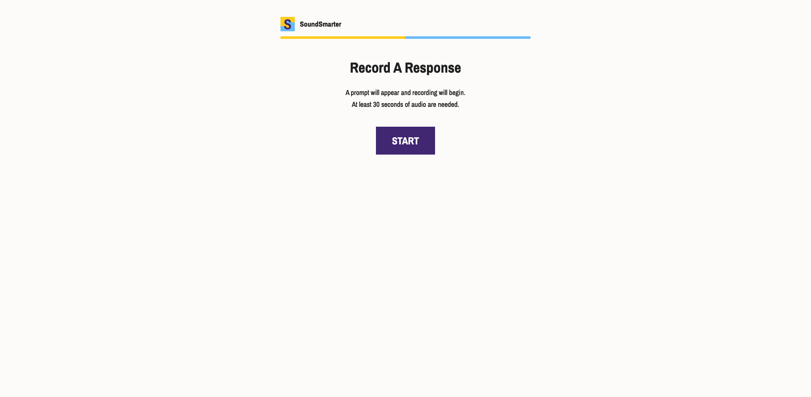
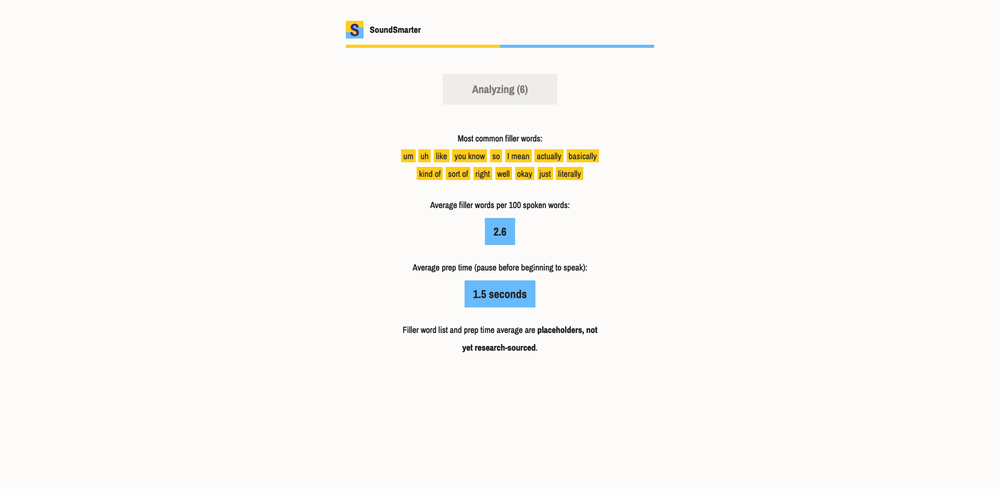
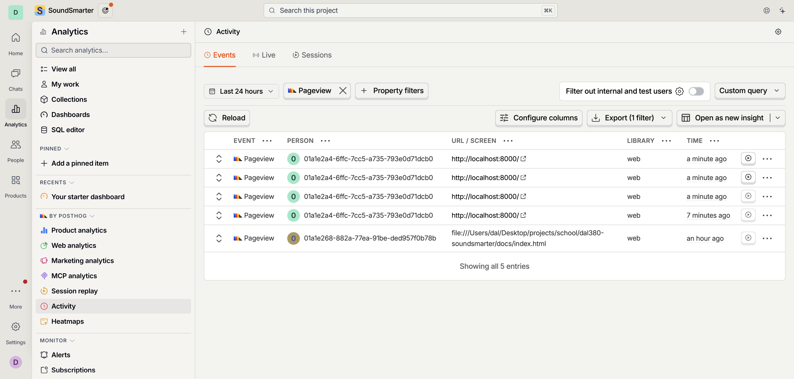

Product Showcase
Current Status: Build 2 live hosted by Render
- Demo code required
- First load may take ~30 seconds

User sees this page first, and is asked to enter a demo code to begin.

User is instructed how to use the app, and what is required of them.

Displays a prompt, begins recording and indicates time elapsed, shows when the minimum 30 seconds have been recorded, allows for prompt skipping, and allows user to move to analysis page.

Holding location while AI is called, displays ticking-down time until results can be viewed, provides basic context to evaluate metrics that user will see on the results page. Allows user to move to results page when analysis is complete.

Shows the metrics, filler word usage, fillers per 100 words, prep time length. Then allows for playback and shows transcript with pauses and fillers indicated. Allows for a new recording to be made.
Analytics
PostHog
- PostHog tracks the app and this page.
- Data is relayed through the app's own server so ad blockers don't drop events.
- App events tracked: pageviews, clicks, recording started, stopped, prompt skipped, analysis done, results shown, playback, mic blocked, transcription failed. Session replay available.

Product Requirements Document
Target Userbase
Speakers who want to develop awareness of their extemporaneous speech patterns through metric analysis.
Need State
Speakers who use filler words like "Um" and "Uh" or who take pauses when speaking off-the-cuff aren't aware of how frequently or noticeably they are doing so. There's no existing tool to easily capture those metrics.
SoundSmarter records and tracks audio to help speakers build awareness of filler word use and pause length.
Core Workflow
- Prompt: User receives a short prompt, randomized from a bank of 12. Option to skip.
- Record: User records their response, unlocking the stop button at 30 seconds of audio, with maximum 60 seconds. Fill bar shows time elapsed without numbers and indicates when 30 seconds is reached.
- Analyze: Nyra Labs CrisperWhisper 2 AI speech-to-text product that keeps every filler and times every word. While it calls, the screen shows reference metrics for user comparison.
- Results: Numbers return: filler count, fillers per 100 words, prep time (time to first sound), along with pausable playback of the recording and the transcription with fillers and pauses marked. No AI feedback is given, just numerical metrics.
Success test: A user can complete the workflow without help and receive back an accurate filler count.
Scope
Core Workflow loop.
Out of Scope (Non-Goals)
- Recommendation based on metrics
- Grammar correction, vocabulary, pronunciation. Not a language learning tool.
Tech Stack
Simple Architecture
Riskiest Assumption
Accurate Detection: That filler words can be detected accurately enough to trust. Speech-to-text tools often clean fillers out of transcripts, and words like "like" are only sometimes fillers ("I like jazz" vs. "it was, like, fine"). If the filler count is wrong, the product's core metric is wrong.
How this build was tested: Four recordings were sent to three speech-to-text services, each with hand-counted disfluencies. Of those, the three normal recordings (18 fillers total) scored:
- Deepgram Nova-2 (the tech from build 1): 13/18
- CrisperWhisper 2 (the current tech): 18/18
- ElevenLabs Scribe v3: 18/18
CrisperWhisper 2 provides more metrics which will be deployed in future builds. None of the services could differentiate between a true filler word "um" and an "um" used as a word, a gap which remains.
Unit Economics & Analytics (Updated Weekly)
Build Log
Build 1: Nov. 9, 2026 – First Working Prototype
- What shipped: A local prototype (Python/FastAPI server + one web page). An intro screen explains the task; the user gets one of 5 fixed prompts, records 30–60 seconds in the browser, and sees how many times they said "um" and "uh", plus the transcript. Skip discards the recording and moves to the next prompt. Filler counting is done in code and covered by automated tests.
- Things learned with AI: Directing a coding agent is mostly writing things down: it only knows what's in AGENTS.md. After early misses I added my experience level, a rule to teach conventions up front, review before every commit, and strict handling of secrets. Read the assignment yourself and check the agent's facts and paraphrases. Shrink scope to what the tool actually does. When something fails, isolate it: comparing a phone recording with the browser showed that both the speech model and the browser's noise suppression were dropping fillers. Picked up the git loop (status, diff, add, commit, push), Conventional Commits, branches, and pull requests.
- What broke / changed in PRD: First live test counted 0 fillers when I'd said 5–8. Two causes: Deepgram's newest model (Nova-3) drops more fillers than the older Nova-2, and the browser's built-in noise suppression flattened soft "um"s. Switching to Nova-2 and raw microphone audio brought it to about 4 of 5–6: it works but still undercounts, which confirms filler detection accuracy as the riskiest assumption. PRD changes: Build 1 now counts only "um" and "uh" (what Deepgram reliably detects); target user broadened from MBA students to young professionals. Test user 1 couldn't tell what to do on the first screen, so I added an intro screen and a 30-second minimum before Stop.
- Cost & time this week: ~$0.10 (Deepgram, about 15 short test calls, covered by free credit) · 4–5 hours total (2 on the prototype)
Build 2: Nov. 16, 2026 – Live, Redesigned, with Analytics
- What shipped: Build 2, live online and on my laptop. New five-screen design (landing, start, record, analyze, results) in yellow, purple and maya blue. Speech-to-text switched from Deepgram to CrisperWhisper 2. Results show fillers, fillers per 100 words, prep time, playback and a marked-up transcript, all computed in code. PostHog on the app and this page. One demo code can now be reused by tester after tester, with a daily cap to protect the bill.
- Things learned with AI: Test every option the same way before trusting a vendor's benchmark. Isolate the cause: a phone recording showed the missing opening "uh" was Deepgram, not the browser. Brave's Shields block analytics; routing PostHog through my own server fixed it. A failed deploy can look like a broken app: Render didn't redeploy on merge, so I deployed manually.
- What broke / changed in PRD: Deepgram missed about a quarter of my fillers and every opening one, so speech-to-text moved to CrisperWhisper 2. The page went blank when the microphone was blocked; it now says why. PRD changes: numbers instead of AI-written feedback; new design; prep time, fillers per 100 words and silent pauses added; one reusable demo code instead of many.
- Cost & time this week: $10 (Nyra prepaid, under $1 used; everything else free) · 6–8 hours
Research Impetus
[Research Impetus: copy to come]